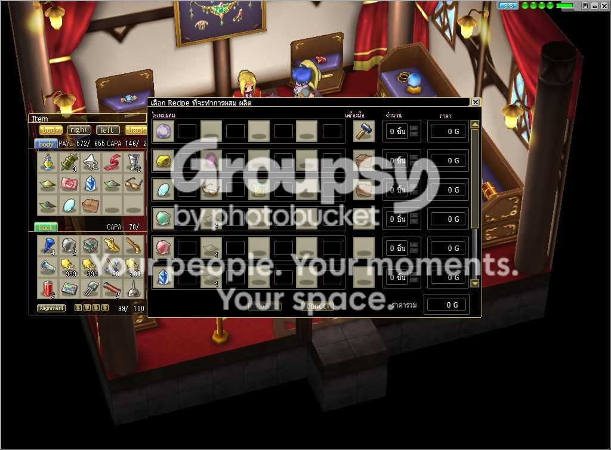

เก็บข้อมูลเองเอามาลงtext นะมีไรผิดก็บอกด้วยนะจะได้แก้
ที่ขาด
Shida Pandant ยังทำไม่ได้ในซาก้านี้เลยไม่ได้ลงนะเพราะต้องไปที่เกาะมอคด้วย
=====LV0====
Paper Paint
-Paper
-Ink Set
Soft ball
+Mechanic Equipment
-Pearl
-Great Cotton
-Fixative
=====LV1=====
Bead Bell
-Glass Bead
-Strap
Cowboy Mask
+Scissor
-Great Silk
Earth Happy Flower
-Purple Seed
-Mana Water
Earth Happy Flower
-Orange Seed
-Mana Water
Flame Happy Flower
-Red Flower Seed
-Mana Water
Happy Flower
-Flower Seed
-Mana Water
Light Happy Flower
-White Seed
-Mana Water
Pelf Barrete
-Skin
-Solvent
-Brooh
Pelf Barrete(Drop)
-Skin
-Solvent
-Brooh
-Blue Powder
Pelf Barrete(Red)
-Skin
-Solvent
-Brooh
-Red Powder
Water Happy Flower
-Light Blue Seed
-Mana Water
Wind Happy Flower
-Yellow Seed
-Mana Water
=====LV2=====
Big Ribbon
-Silk Ribbon
-Muslin
Bouquet
-Brisoft Flower
-Brooch
-Fixative
Brisoft Flower
-Clear Flower
-Red Powder
-Career Oil
Blue Talisman+
+Diamond Rasp
-Fixative
-Pelf Belf
-Rapis Razuri
-Circle Steel
Clear Flower
-Flower
-Seriko
Crystal Pendant
+Mechanic Equipment
-Crystal
-Brooch
-Fixative
Filet
+Mechanic Equipment
-Plastic
Flower Noselimb
+Mechanic Equipment
-Brisoft Flower
-Brooch
-Fixative
Pelsona
+Knife
-Wood
-Red Powder
-Light Blue Powder
Red Talisman+
+Diamond Rasp
-Fixative
-Pelf Belf
-Garnet
-Sal Steel
Ribbon(ที่หู)
+Mechanic Equipment
-Silk Ribbon 2
Salamandra Necklace
-Heart Ruby
-Gold Component
-Chameleon Tail
Steel Comb
-Knit Needle 30
-Fixative
Stone Mask
+Mechanic Equipment
-Crystal Piece 4
-Cut Out Machine 4
-Fixative
White Talisman+
+Diamond Rasp
-Fixative
-Pelf Belf
-Pearl
-Holy Silver
Yurikago Pendant
+Diamond Rasp
-Fixative
-Brooch
-Emerald
-Four Leaves Clover
Zirconium Pendant
+Mechanic Equipment
-Cube Jiriconia
-Brooch
-Fixative
=====LV3=====
Big Ribbon(ที่หู)
+Mechanic Equipment
-Silk Ribbon 2
-Brooch
-Fixative
Circular glasses (Red)
+Mechanice Equipment
-Nosepiece
-Lens Glasses
-Red Powder
Circular glasses (Black)
+Mechanice Equipment
-Nosepiece
-Lens Glasses
-Black Powder
Choker
+Mechanice Equipment
-Black Ribbon
-Gold Component
-Fixative
Funiture(Golden)
-Gild Water
-Glass Bead
Guard of Tiara
+Tong
-Holy Silver
-Crystal Piece
-Piece of Rapis Razuri
-Fixative
Joker
+Mechanic Equipment
-Velvet Ribbon
-Gold Component
-Fixative
Lens Glasses
-Crystal
-Cut Out Machine 4
Monocle
+Mechanic Equipment
-Lens Glasses
-Nosepiece
-Funiture(Golden)
-Fixative
Nosepiece
+Tong
-Titanium Wire
Ribbon
+Mechanic Equipment
-Silk Ribbon
-Brooch
-Fixative
Red Ribbon(ที่หู)
+Scented Ribbon 2
Round Filet
+Mechanic Equipment
-Filet
-Scented Cloth
-Brooch
-Fixative
Soft Strap
-Steel Staff
Titanium Wire
-Titanium Staff
Valkiery Accessory
+Mechanic Equipment
-Valkyrie Tear
-Brooch
-Fixative
-Raigyo Skin
Wing Accessory
-Cocko Wing
Wing Mask
+Mechanic Equipment
-Wing Accessory 30
-Brooch
-Fixative
=====LV4=====
Amethyst
-Grey Crystal3
-Cut Out Machine 4
Aqaumarine
-Marine Crystal1
-Cut Out Machine 4
Canon Mask
+Mechanic Equipment
-Sweater Cross
-Great Thread
Cheterrok
-Marine Crystal3
-Cut Out Machine 4
Clever Glasses
+Mechanic Equipment
-Lens Glasses
-Nosepiece
-Enther 10
-Chewy Candy
Cube Jiriconia
-Grey Crystal2
-Cut Out Machine 4
Diamond
-Grey Crystal1
-Cut Out Machine 4
Earth Summon Stone
-Green Crystal4
-Cut Out Machine 4
Electric Stone
-Yellow Crystal3
-Cut Out Machine 4
Ellipse Glasses
+Mechanic Equipment
-Lens Glasses
-Nosepiece
-Falcon Eye
-Ruji
Emerald
-Green Crystal1
-Cut Out Machine 4
Expert Pendate(Unused)
+Mechanic Equipment
-Heart Ruby
-Aquamarine
-Emerald
-Imperial Topaz
Falcon Eye
-Grey Crystal4
-Cut Out Machine 4
Female Tear
+Mechanic Equipment
-Gold
-Amethyst
Fire Summon Stone
-Red Crystal4
-Cut Out Machine 4
Garnet
-Red Crystal2
-Cut Out Machine 4
Heart Ruby
-Red Crystal1
-Cut Out Machine 4
Imperial Topaz
-Yellow Crystal1
-Cut Out Machine 4
Jade
-Green Crystal3
-Cut Out Machine 4
Light Stone
-Grey Crystal5
-Cut Out Machine 4
Melody Stone
-Red Crystal3
-Cut Out Machine 4
Peridot
-Green Crystal2
-Cut Out Machine 4
Rapis Razuri
-Marine Crystal2
-Cut Out Machine 4
Rujil
-Yellow Crystal2
-Cut Out Machine 4
Savant Ribbon(Unused)
+Mechanic Equipment
-Amethyst
-Scrented Ribbon
-Fixative
-Brooch
Strange Glasses
+Mechanic Equipment
-Lens Glasses
-Nosepiece
-Glid Water
Treasure Brooch(Unused)
+Mechanic Equipment
-Amethyst
-Velvet Ribbon
-Fixative
-Brooch
Truth Glasses
+Mechanic Equipment
-Lens Glasses
-Nosepiece
-Eyes of Koketoris 2
-Plasma
Water Summon Stone
-Marine Crystal4
-Cut Out Machine 4
Wind Summon Stone
-Yellow Crystal4
-Cut Out Machine 4
=====Lv5=====
Amethyst Pendant
+Mechanic Equipment
-Amethyst
-Brooch
-Fixative
Bell
+Mechanic Equipment
-Great Ribbon
-Gold Cmponent
-Brooch
-Fixative
Diamond Powder
+Steel Hammer
-Diamond
Diamond Rasp
-Diamond Powder
-Skin
-Fixative
Red Ribbon
+Mechanic Equipment
-Great Ribbon
-Brooch
-Fixative
Snorkel
+Mechanice Equipment
-Lens Glasses
-Insmouse Fabric
-Unicorn Horn
-Fixative
Accessory Recipe
11 โพสต์
• หน้า 1 จากทั้งหมด 1
Accessory Recipe
 โดย ECO » จันทร์ 13 ส.ค. 2007 5:55 pm
โดย ECO » จันทร์ 13 ส.ค. 2007 5:55 pm
- ECO
- Dark Warrior

- โพสต์: 276285
- ลงทะเบียนเมื่อ: พุธ 26 ต.ค. 2011 9:31 pm
 โดย ECO » อังคาร 14 ส.ค. 2007 12:35 am
โดย ECO » อังคาร 14 ส.ค. 2007 12:35 am
เสียดายที่ผมไม่มี recipe book เลยหารูปมาลงไม่ได้หาเองก็ตายเหมือนกันครับ = =' บางitem หาคนขายก็ยากมากหรือทำเองก็ลำบากพอควรเช่น white talisman จะมีซักกี่คนที่ทำอันนี้กันเป็นต้นครับ ไว้มีหนังสือขายจะมาอัพเดทอีกรอบครับตอนนี้เอา text ไปก่อนละกันครับ
- ECO
- Dark Warrior
- โพสต์: 276285
- ลงทะเบียนเมื่อ: พุธ 26 ต.ค. 2011 9:31 pm
 โดย ECO » อังคาร 14 ส.ค. 2007 12:37 am
โดย ECO » อังคาร 14 ส.ค. 2007 12:37 am
Circular glasses (Red)
+Mechanice Equipment
-Nosepiece
-Lens Glasses
-Red Powder
Circular glasses (Black)
+Mechanice Equipment
-Nosepiece
-Lens Glasses
-Black Powder
2สนใจ แว่น2อันนี้แหะ อยากเหงรูปในเกมส์จัง เหงรูปล่ะ เปงแว่นกลมๆแต่ใส่ในเกมส์จะเปงไงอ่า>w<
- ECO
- Dark Warrior
- โพสต์: 276285
- ลงทะเบียนเมื่อ: พุธ 26 ต.ค. 2011 9:31 pm
 โดย ECO » จันทร์ 20 ส.ค. 2007 5:22 am
โดย ECO » จันทร์ 20 ส.ค. 2007 5:22 am
Wizardofsoul เขียน:Circular glasses (Red)
+Mechanice Equipment
-Nosepiece
-Lens Glasses
-Red Powder
Circular glasses (Black)
+Mechanice Equipment
-Nosepiece
-Lens Glasses
-Black Powder
2สนใจ แว่น2อันนี้แหะ อยากเหงรูปในเกมส์จัง เหงรูปล่ะ เปงแว่นกลมๆแต่ใส่ในเกมส์จะเปงไงอ่า>w<


มันคือไม่มีให้ทำอ่ะท่าน - -"
- ECO
- Dark Warrior
- โพสต์: 276285
- ลงทะเบียนเมื่อ: พุธ 26 ต.ค. 2011 9:31 pm

11 โพสต์
• หน้า 1 จากทั้งหมด 1
ผู้ใช้งานขณะนี้
กำลังดูบอร์ดนี้: ไม่มีสมาชิก และ บุคคลทั่วไป 2 ท่าน